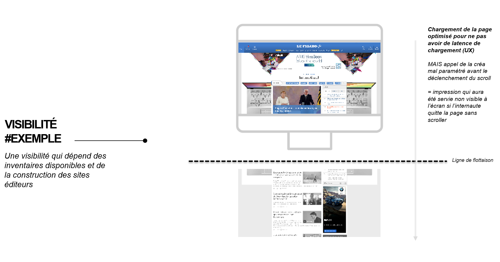
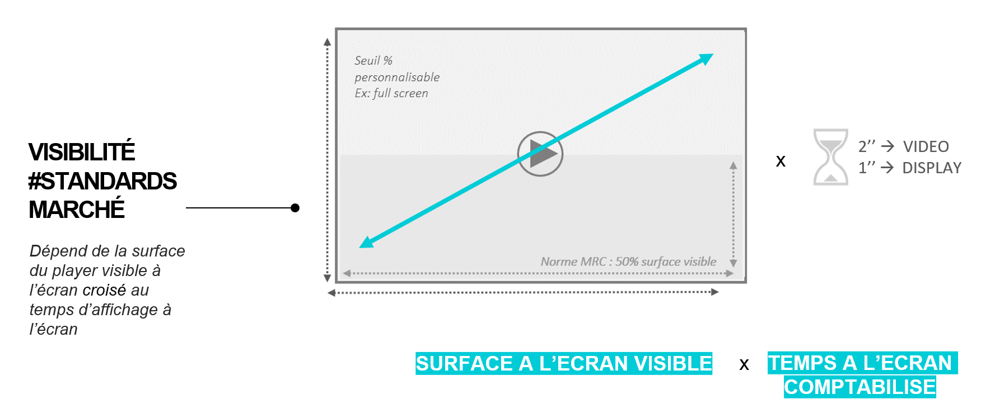
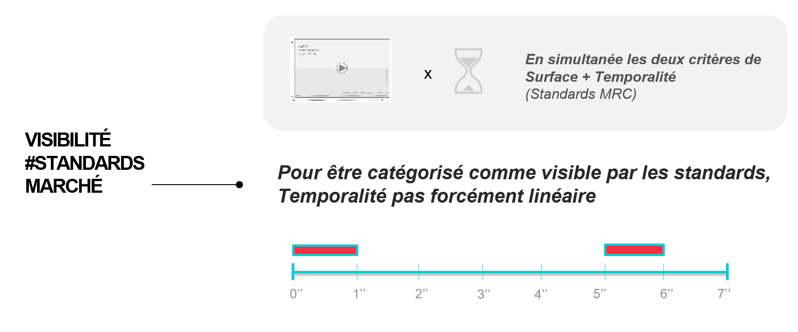
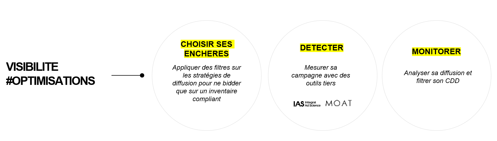
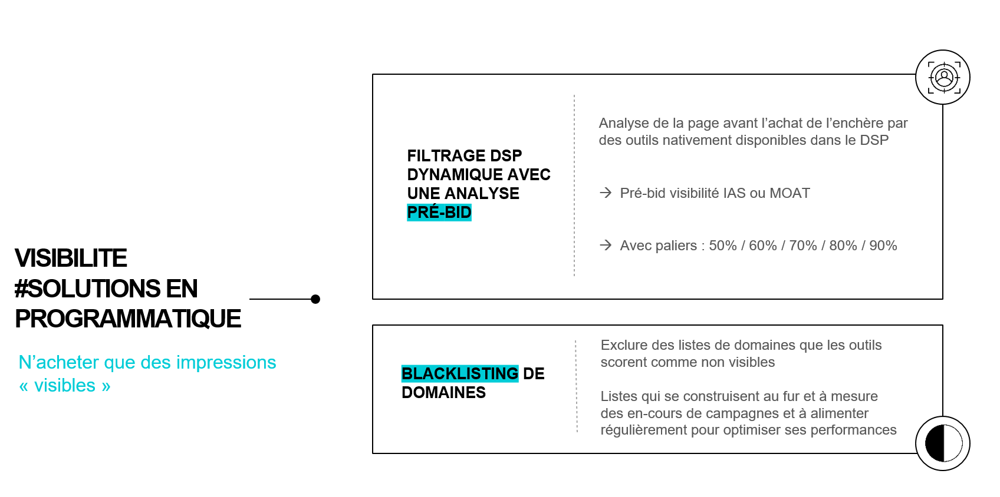
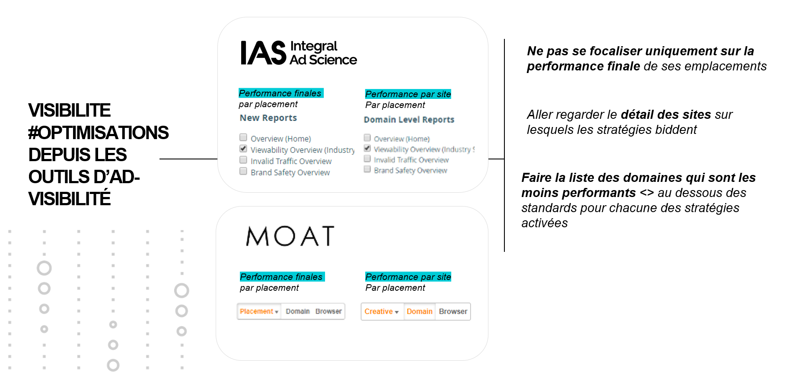
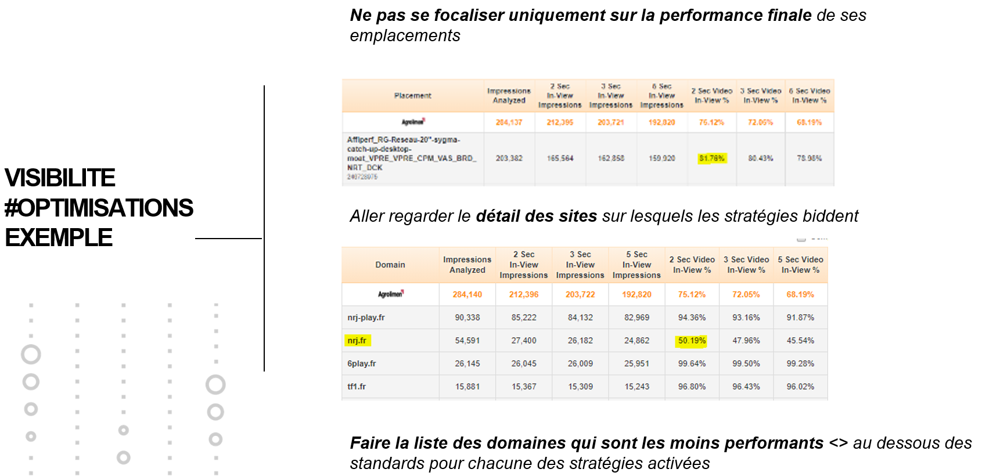
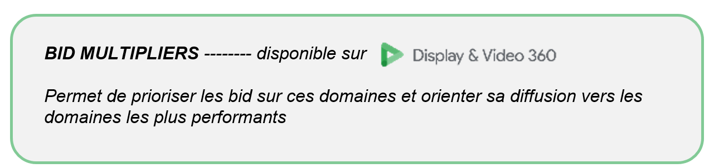

Challenge 3 : VISIBILITE & IMPACT PUBLICITAIRE
"Pour que les publicités digitales aient un impact, elles doivent d’abord être vues. Aujourd’hui, près de 40% des publicités diffusées en France ne sont pas visibles. "
- Integral Ad Science
Mais qu'est que cela veut dire d'être non visible ?
Dans la publicitié digitale, délivrer une impression sur une page web signifie que le format appelé (image ou vidéo) s'est chargé avec la requête d'accès au serveur. En effet, les pages web chargent également leur contenu situé au dessous de la ligne de flotaison, c'est à dire au dessous de ce qui apparait sur l'écran sans se déplacer. Avoir le contenu de la page près à être consulté favorise l'expérience utilisateur, permettant de gagner en fluidité de navigation.
Pour les marketeurs, cela signifie alors qu'une impression peut être achetée et servie mais sans pour autant ne jamais être vue, dans le cas où l'internaute ne scrollerait pas jusqu'à le rendre visible.Une impression ne garantie aucunement qu'elle soit effectivement apparue visible à l'écran de l'internaute ciblé. Il est donc important de pouvoir s'assurer que ses publicités soient délivrées dans un espace visible : ne pas simplement avoir des impressions, mais des impressions visibles.

Quelle définition adopter pour affirmer qu'une impression aura été visible ou non visible ?
La norme marché MRC se base sur le pourcentage de surface exposé et sur la durée du temps d'exposition.
La durée d'exposition minimum pour considérer un format visible en display est d'une seconde et en vidéo de deux secondes, sur minimum 50% de la surface du format.


Mais alors comment mesurer et optimiser la visibilité d'une publicité ?
- Le paramètrage à l'achat est important. S'assurer que les DSP achètent des emplacements qui ont un historique élevé de performances visibles.
- L'utilisation de trackings enrichis permet de monitorer les performances d'une campagne avec un suivi précis des emplacements qui auront été servis comme visibles ou non. Des technologies de mesure ont été développées notamment par IAS er MOAT, leaders sur le marché.
- Remonter ses performances sur un serveur ne s'avère pas suffisant, il faut exploiter ces données et les actionner stratégiquement dans son cadre de diffusion.

1. CHOISIR SES ENCHERES : Optimiser depuis les serveurs d'achat, les DSP

2. DETECTER : Extraire les données et savoir les comprendre

3. MONITORER : Analyser les performances et mettre en place des optimisations des cadres de diffusion

